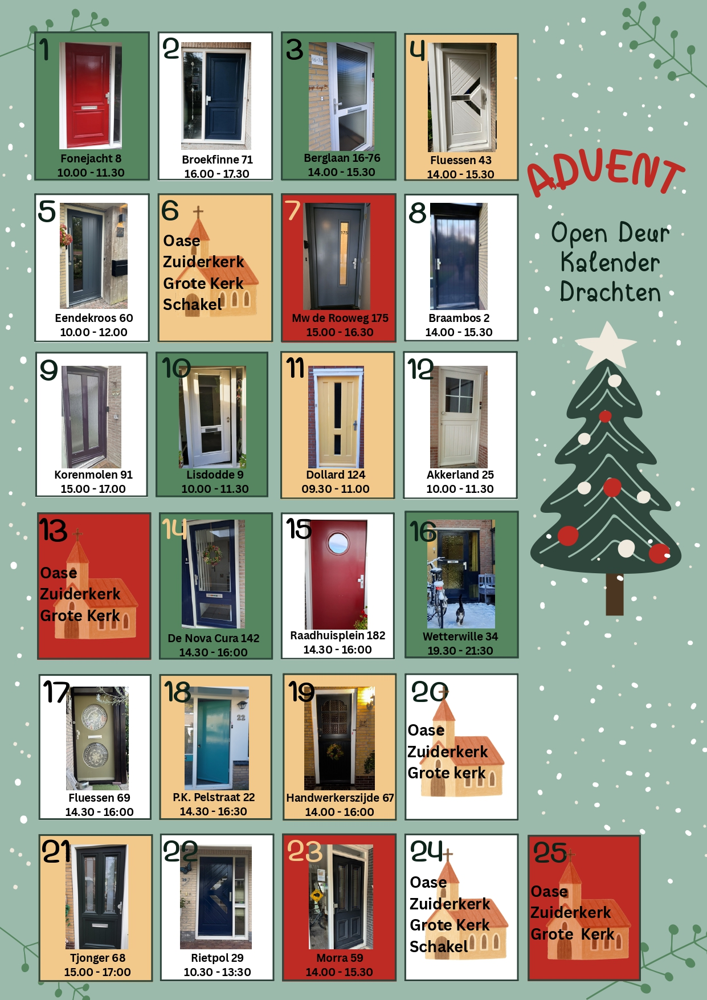

AdventOpen Deur Kalender Drachten
Elke dag in de adventstijd gaat er een deur open voor een warm drankje en een gesprek. Op zondag is dat een kerkdeur. U bent van harte welkom.

Tip: tik op de kalender en zoom in om de adressen goed te kunnen lezen.